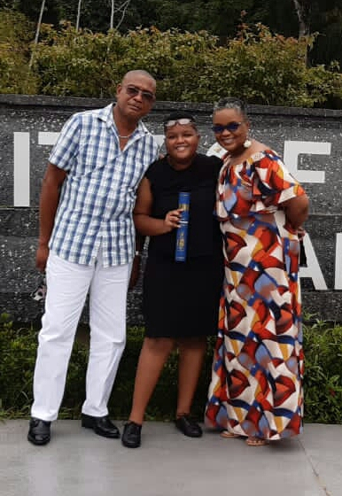
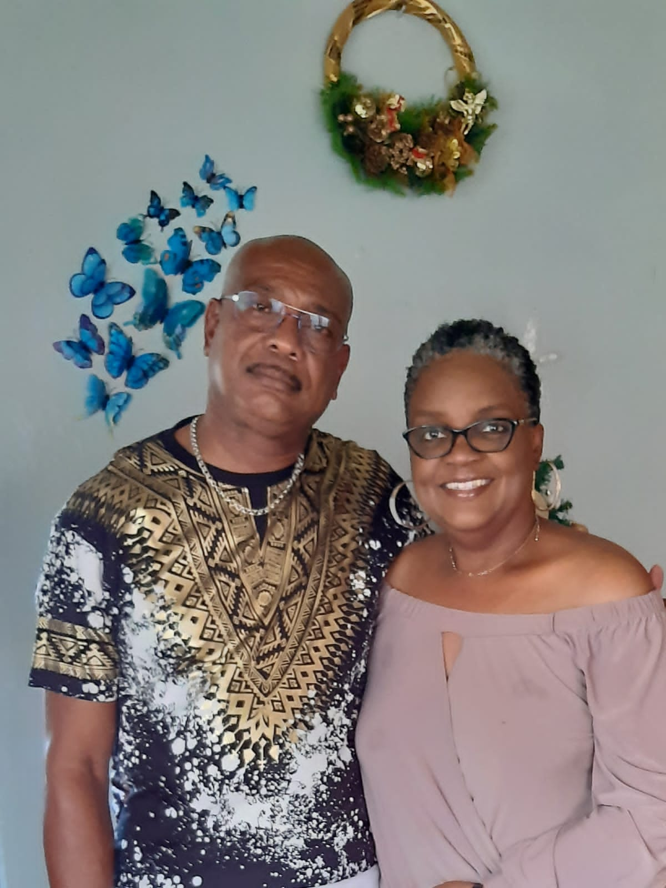

Happy Mother's Day
Roman emperor and Stoic philosopher, Marcus Aurelius wrote in his book 'Meditations' about the things he learned from his mother;
"From my mother, piety and beneficence, and abstinence, not only from evil deeds, but even from evil thoughts; and further, simplicity in my way of living, far removed from the habits of the rich."For Mother's Day, I haved decided to make my own list. 20 years and 6 months ago, I officially made you a mother. So, I am going to list the 20 things that I learned/inherited from my mother.
- I learned humilty. To be humble in all my successes and give thanks to God for it.
- I learned to give my aboslute best in everything. Do it well or don't do it at all.
- I learned to have faith, not only in God but to have faith in the process, that things will be alright.
- My strength came from her. Seeing her struggle with life but she kept on going, no matter what.
- I learned to be persistant in everything. Never leave something unfinished, no matter how long it takes.
- I inherited her constant quest for knowledge.
- I gained her passion for music and her appreciation for the arts.
- My creativity, my ability to create something from nothing. That's all thanks to her.
- Her intelligence was passed down to me. I don't only mean smarts, but I have her logical, analytical way of thinking as well.
- I gained her looks and I mean it in the literal sense. Persons call me her carbon-copy.
- I got her fears as well. It may not be a positive trait, but we shall quiver in fear together.
- I got her love for life. Her ability to enjoy most days and just be grateful for waking up.
- I got her love for God. I may not have the same fervour as her but it is there.
- I gained her literary skill and learned to love reading.
- I gained her dislike for pictures. Another negative gain but it just makes any pictures that we take together extra special.
- I gained for love of family and to cherish them with my heart and soul.
- I learned the importance of self-improvement. To never be stagnant and complacent in my current position but to want the best for myself, always.
- While on the quest for knowledge, I gained her course junkie habit. Jumping from course to course, learning as much as I can.
- Like a true mother, she taught me her caring ways. To always want to care for others in any way possible.
- True love from the day I was born.
But the greatest thing that I could ever learn from my mother,
Happy Mother's Day to my wonderful mother, Genevieve Asson-Chinapoo!

